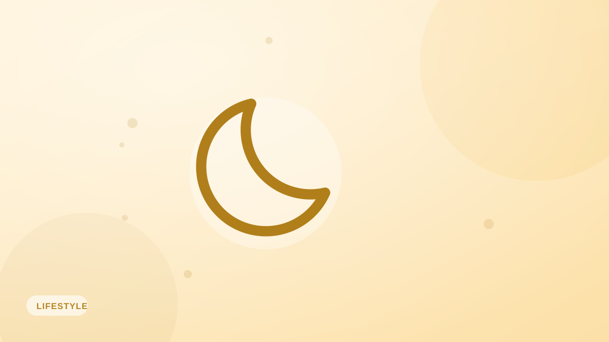

Cómo afecta el sueño a tu peso (más de lo que crees)
>Dormir mal sabotea la pérdida de peso en silencio: sube el hambre, los antojos y el almacenamiento de grasa. La ciencia y formas sencillas de dormir mejor.

La nutrición y el ejercicio se llevan toda la atención, pero el sueño es el socio silencioso del control del peso. Si lo descuidas, todo lo demás cuesta más. El efecto es mayor de lo que la mayoría imagina.
Qué le hace el mal sueño al hambre
La falta de sueño desplaza dos hormonas clave del apetito: sube la grelina (la que te da hambre) y baja la leptina (la que señala saciedad). El resultado es que, cansado, tienes más hambre y te sientes menos satisfecho aunque comas lo mismo.
Los antojos se vuelven más fuertes
Dormir poco también amplifica la respuesta de recompensa del cerebro ante los alimentos calóricos, dulces y grasos, mientras debilita las zonas del autocontrol. Por eso una mala noche desemboca tan a menudo en un día picoteando justo lo que no toca.
Menos energía, menos movimiento
Cuando estás agotado, te mueves menos sin darte cuenta: tu NEAT baja. Los entrenamientos se hacen más duros, los paseos se acortan y el total de calorías que gastas cae en silencio.
Afecta a lo que pierdes
En estudios en los que se restringió el sueño a personas a dieta, perdieron una cantidad de peso parecida, pero mucha más parte venía del músculo y no de la grasa. Dormir ayuda a que el peso que pierdes sea el que quieres perder.
Mejoras sencillas del sueño
- Apunta a 7–9 horas de forma constante: la regularidad importa.
- Corta la cafeína a partir de primera hora de la tarde.
- Baja pantallas y luces en la última hora antes de acostarte.
- Mantén la habitación fresca, oscura y silenciosa.
Si registras con Fotocal, fíjate en cómo cambian tu hambre y tus elecciones los días que has dormido mal: hace imposible ignorar la relación entre sueño y apetito.
Ideas clave
- Dormir mal sube las hormonas del hambre y los antojos.
- El cansancio reduce el movimiento diario y la calidad del entrenamiento.
- Dormir poco desplaza la pérdida hacia el músculo en vez de la grasa.
- Apunta a 7–9 horas constantes para apoyar tus objetivos.